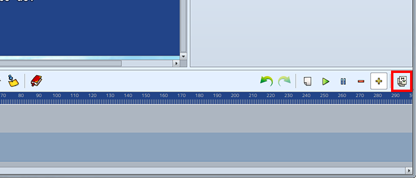

创建场景
指定MV项目
在使用该软件创建场景之前，需要打开一个MV项目。单击[文件]→[打开项目]，并在mv game文件夹中指定一个[game.rpgproject]文件。

场景创建过程
新创建的项目将没有图片。
将要使用的图片放入img/pictures文件夹。
*这次，将img/parallaxes/文件夹中的图片复制到img/pictures文件夹。
- （1）添加图片显示事件
-
按[显示图片事件]按钮将图片显示事件插入时间线。

事件将添加到时间线中光标位置的起始点。
可以通过拖动或单击来移动光标。 - （2）添加显示图片事件的设置
-
单击添加到时间线上的“显示图片”事件将在属性区域中显示其图片设置属性。

单击[图片]的[图片]选择将在事件中显示的图片。 *您可以从img/pictures文件夹中选择图像。 - （3）新建行
-
单击“添加新行”按钮添加新行。

- （4）添加显示文本事件。
-
选择添加的行并将光标拖动到显示文本事件存在的位置。单击[显示文本事件]按钮，显示文本事件将插入到您添加的行中。

- （5）编辑显示文本事件
-
单击添加到时间线上的“显示文本”事件进行选择，其文本设置属性将显示在属性区域中。
- （6）预览
-
[单击[播放]按钮以查看事件当前在预览区域中的状态。播放将从光标的位置开始，因此请确保将光标拖动到所需的位置。

按[停止]按钮结束播放并启用其他按钮。 - （7）将时间线复制为事件
-
单击[复制为事件]按钮复制时间线。时间线将作为RPG Maker MV的事件复制到剪贴板。
- （8）复制事件至MV
-
通过在mv事件屏幕中[粘贴]，将显示在场景生成器中创建的事件的内容。
确保在mv中可以正确预览事件。